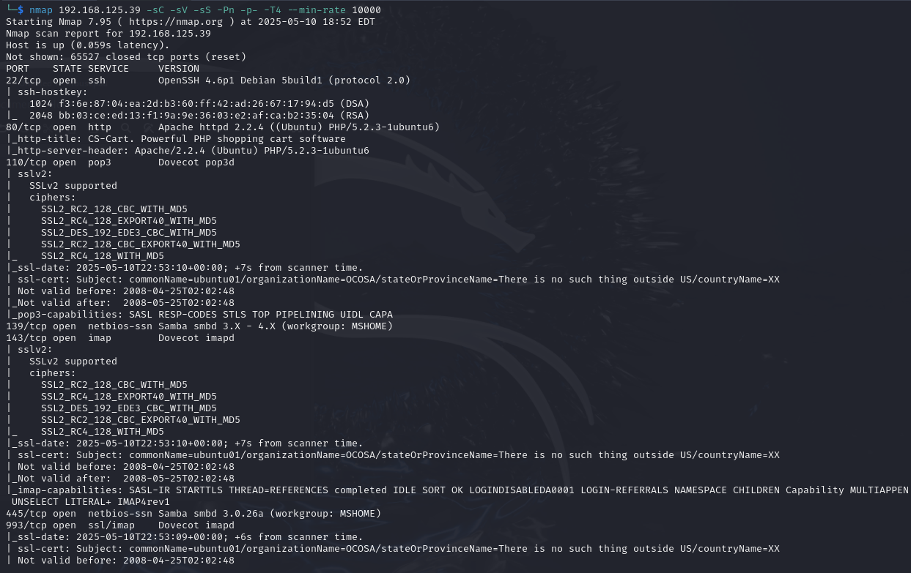
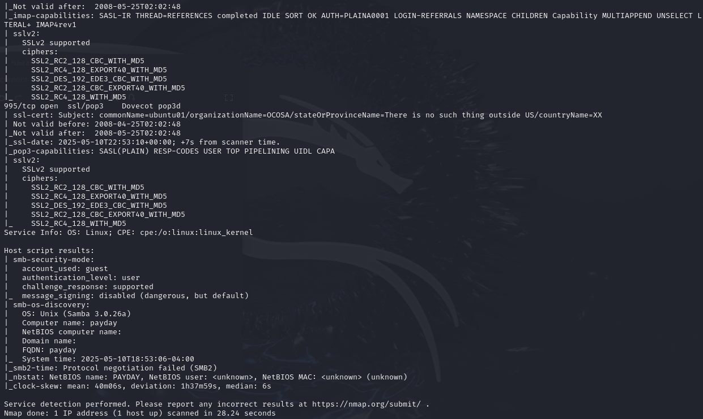
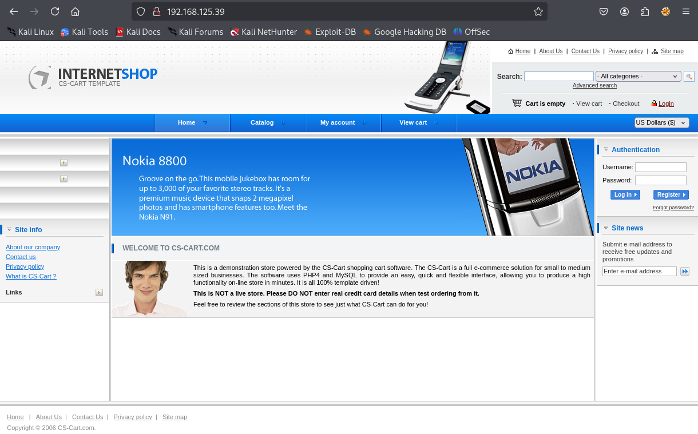
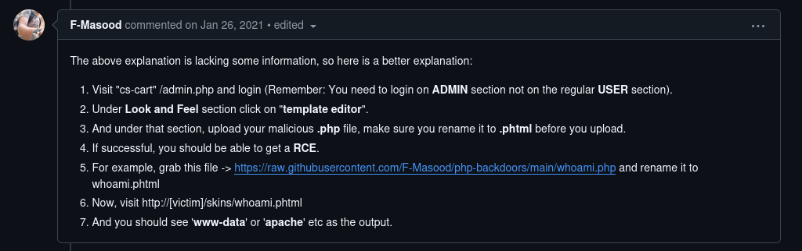
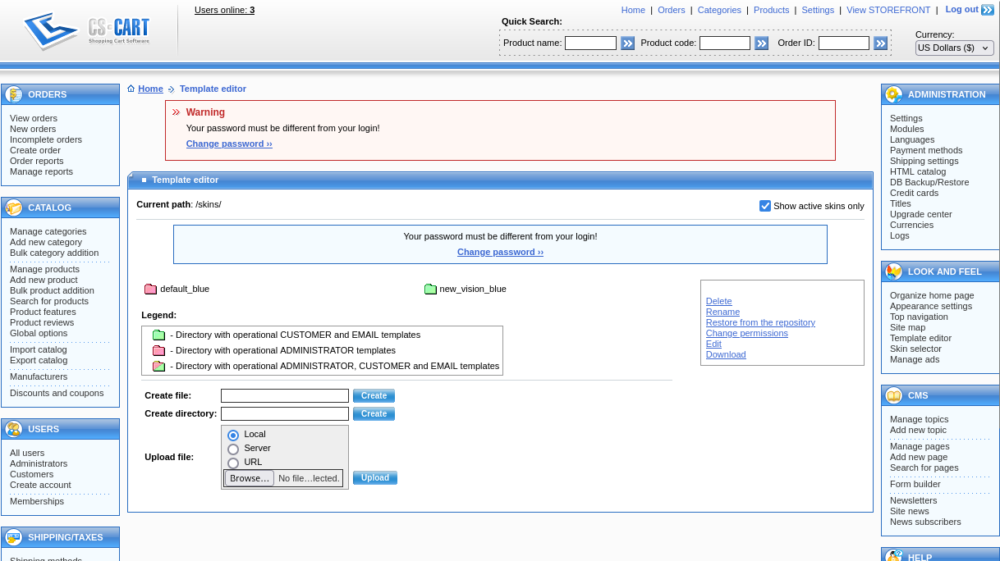
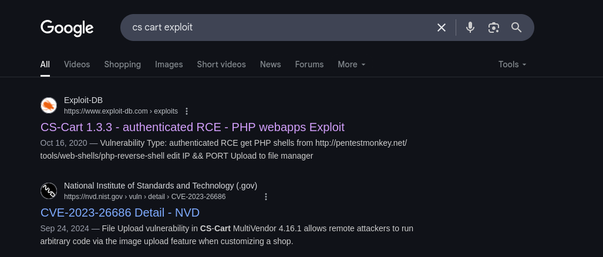

Payday
Payday is an intermediate Proving Grounds box, also rated as intermediate by the community. An outdated version of the CS Cart service allows for a malicious file upload which gives us a shell. Discovering a pattern in database credentials leads us to log in as another user who has access to all sudo commands.
Start with a simple nmap scan:


Port 80 seems to be open and also the easiest to check. Let's use dirsearch as well:


Under the Autehntication tab on the right we have a login field. We'll attempt a login with default credentials like admin:admin:
Nice, it worked!
By visiting /admin after logging in as admin we land here:

Looking at the header of this page and in various spots of the landing page we can surmise that a service called CS Cart must be in use. Let's enumerate it with searchsploit and Google:

This is great, we see a lot of exploits including RCE, LFI and Remote File Inclusion which are all good signs of a compromised service.


This Github repository cs cart authenticated RCE seems interesting, let's check it out:

Following the steps of this repo we visit /admin again. Under LOOK AND FEEL in the right sidebar of the page we click Template editor:

Prepare a reverse shell script (Google pentestmonkey reverse shell):

Rename the script with a .phtml extension:

Have an nc listener on port 80 and then visit http://<target ip>/skins/reverse_shell.phtml:


Awesome, looks like we got a shell! See if we can grab local.txt:

Despite being www-data, we were able to cd into patrick's directory. We may need to login as patrick later on.
Under /var/www we discover a potentially sensitive file config.php. Use cat to extract contents from it:

If database credentials have the same username and password, it might be the case that other parts of this machine follow the same pattern. It couldn't hurt to try logging in as patrick with the password patrick:

Cool, let's see if patrick has any available sudo commands:

This means that patrick can use any command under sudo. Makes our job a lot easier, all we need to do is switch to the root user:

Rooted!